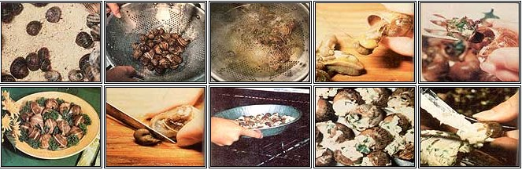

CLOCKWISE FROM TOP' LEFT: Cornmeal cleans 'em out and fattens 'em up .... A good bath will soon remove all the ""slime"" . . . . Blanch the snails with a brief boil in water spiced with vinegar and a bay leaf .... Any pointed tool will evict the critters from their homes . . . . Cut the dark bitter-tasting gallbladders off of the snails .... Cook till tender, then restuff 'em with some tasty garlic butter .... The French have made a fetish of traditional escargots .... Broil your ""mollusk meat"" until it bubbles .... They're so delicious, you feel almost decadent when you eat them.